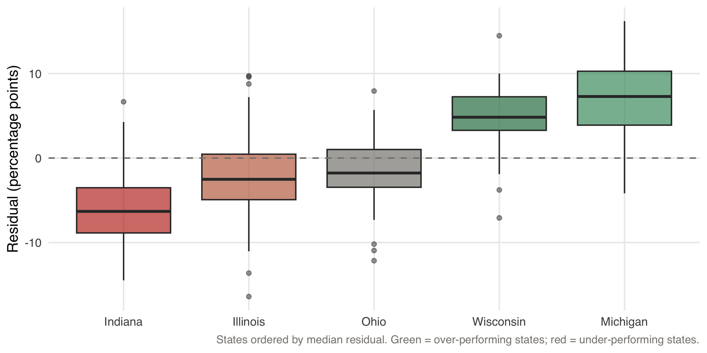

Synthesis
This project began with a straightforward observation from the CLC descriptive analysis: Wisconsin and Michigan consistently showed higher county-level turnout and smaller within-state gaps than Indiana, Illinois, and Ohio — even after accounting for demographic differences. The descriptive analysis could document this pattern but could not explain it. The predictive modeling phase was designed to ask a more precise question: beyond what demographics predict, what explains why some counties over- or under-perform?
The answer that emerges across both the quantitative modeling and the qualitative case analysis points to two primary factors: model specification and state institutional access environments.
Finding 1
Model 1 used five structural predictors drawn from the CLC descriptive findings: bachelor’s degree attainment, internet access, limited English proficiency, disability status, and poverty. It explained approximately 43% of variance in county-level turnout rates (Adjusted R² = 0.434).
A natural critique of this specification — motivated by the CLC descriptive findings themselves — was that race and lower-tail educational attainment were prominent correlates of turnout variation but absent from the model. Model 2 added percent Black population and percent with no high school diploma. The results were meaningful:
| Model | Predictors | Adj. R² | RMSE |
|---|---|---|---|
| Model 1 | Bachelor’s, Internet, LEP, Disability, Poverty | 0.434 | 0.0628 |
| Model 2 |
|
0.536 | 0.0567 |
Adjusted R² improved from 0.434 to 0.536 — a meaningful gain. Both added predictors were highly significant: lower-tail education (β = -0.011, p < .001) and Black population share (β = -0.002, p < .001) independently suppress turnout beyond what the original five predictors captured.
The most important case-level result: Brown County IL’s residual collapsed from -16.4pp to +1.5pp in Model 2. Brown was not genuinely anomalous — Model 1 was underspecified for its demographic profile. Its severe lower-tail educational disadvantage and unusually high Black population share for a rural county of its size were suppressing turnout in ways the bachelor’s variable alone could not capture.
Finding 1 A more fully specified model resolves Brown County’s apparent anomaly — confirming that race and lower-tail educational attainment are independent predictors of turnout suppression. This has direct methodological implications: future county-level turnout models should include both tails of the education distribution and racial composition alongside resource-based structural variables.
Finding 2
Brown County’s resolution by Model 2 makes the persistence of the other case county residuals more analytically significant — not less. Even in the better-specified model, four of the five remaining case counties retain substantial residuals:
| County | State | Tier | Actual (%) | Model 1 Residual (pp) | Model 2 Residual (pp) |
|---|---|---|---|---|---|
| Montmorency | Michigan | Over-Performer | 80.1 | 16.2 | 13.1 |
| Trempealeau | Wisconsin | Over-Performer | 75.3 | 14.5 | 9.2 |
| DeKalb | Illinois | As-Expected | 63.2 | 0.0 | -0.5 |
| Clinton | Ohio | As-Expected | 65.7 | 0.0 | -1.3 |
| Vanderburgh | Indiana | Under-Performer | 54.3 | -14.5 | -11.8 |
| Brown | Illinois | Under-Performer | 47.8 | -16.4 | 1.5 |
Vanderburgh County IN remains at -11.8pp in Model 2. Montmorency MI remains at +13.1pp. Trempealeau WI remains at +9.2pp. These are not demographic artifacts — they are real unexplained variation that tracks systematically with state institutional environments.
The state-level pattern is the clearest evidence. Looking across the full residual distribution, Wisconsin and Michigan counties dominate the top — while Indiana counties dominate the bottom. Six of the ten largest negative residuals belong to Indiana counties. This clustering cannot be explained by county-level demographics alone.

Distribution of model residuals by state. Positive residuals indicate over-performance relative to structural predictions; negative residuals indicate under-performance. Model 1 residuals shown.
The institutional access contrast between the states is stark:
| State | Same-Day Reg | No-Excuse Absentee | Early Voting | Photo ID | Median Residual |
|---|---|---|---|---|---|
| Wisconsin | ✓ | ✓ | ✓ | Strict | Positive |
| Michigan | ✓ | ✓ | ✓ (9 days min) | Strict | Positive |
| Ohio | ✗ | ✓ | ✓ | Non-strict | Near zero |
| Illinois | ✗ | ✓ | ✓ | None | Negative |
| Indiana | ✗ | ✗ | Limited | Strict | Most negative |
The pattern is not perfectly linear — Illinois has relatively permissive ID requirements yet still shows negative median residuals, suggesting other factors are at work. But the Indiana/Wisconsin contrast is sharp and consistent: Indiana’s combination of strict photo ID, no same-day registration, and no no-excuse absentee produces the most suppressed residual distribution of any state, while Wisconsin and Michigan’s permissive access environments produce the most elevated.
Finding 2 State institutional access environments explain a meaningful portion of the residual variation that demographic models cannot capture. Counties in permissive states (WI, MI) systematically over-perform their structural predictions; counties in restrictive states (IN) systematically under-perform. This pattern persists across both model specifications and is most clearly illustrated by the Trempealeau/Vanderburgh contrast — a rural lower-income Wisconsin county over-performs while an urban Indiana county under-performs, despite the model predicting similar turnout for both.
Finding 3
The most analytically compelling comparison in the dataset is between Trempealeau County WI and Vanderburgh County IN. Both are structurally disadvantaged in different ways — Trempealeau is rural, lower-income, and lower-education; Vanderburgh is urban with a diverse population in a restrictive state. Yet their residuals point in opposite directions by roughly equal magnitudes.
Trempealeau suggests that permissive voting access policies can compensate for structural disadvantage — a rural, lower-income, Republican-leaning county achieves 75% turnout because Wisconsin’s institutional environment lifts the floor for all counties regardless of demographics.
Vanderburgh suggests that restrictive policies suppress turnout even where structural conditions are favorable — an urban county whose demographics predict higher participation consistently under-performs because Indiana’s compounding barriers (strict ID, no SDR, no no-excuse absentee) depress participation in ways that demographics cannot explain.
This contrast holds even after Model 2’s improved specification. It is not a demographic artifact — it is an institutional story.
Limitations
This analysis is observational and cross-sectional. The institutional access argument is supported by pattern evidence across counties and states, but causal identification is not possible from these data. Several important limitations apply:
State fixed effects were deliberately omitted. Including state dummies would absorb the institutional variation this analysis seeks to examine qualitatively. This is a principled analytical choice, not an oversight — but it means state-level confounders beyond voting laws (political culture, party infrastructure, historical patterns) cannot be separated from the institutional access effect.
Age is not in the model. Age is one of the strongest individual-level predictors of turnout and was not available in the county-level format used for other predictors. Montmorency County’s median age of 56 likely contributes to its over-performance in ways the model cannot capture. Future specifications should include median age or percent 65+ as a predictor.
Small county instability. Brown County’s N of approximately 6,000 means the turnout rate is sensitive to small vote count changes. The large Model 1 residual may partly reflect noise in addition to genuine demographic specification issues.
The qual analysis is secondary source only. County narratives draw on publicly available documents, news archives, and organizational reports — not primary fieldwork or interviews. The explanatory factors identified are theoretically motivated hypotheses, not confirmed causal mechanisms.
Implications
These findings have direct implications for the CLC’s Midwest expansion strategy:
Prioritize Indiana. The concentration of large negative residuals in Indiana — six of the bottom ten — combined with the state’s restrictive institutional environment suggests that Indiana counties face suppression beyond what demographics predict. This is exactly the kind of pattern that should inform CLC’s litigation, advocacy, and voter protection priorities. Vanderburgh/Evansville is a natural starting point given its size, documented low turnout, and existing local GOTV infrastructure through the Evansville NewsLab.
Institutional advocacy is as important as community organizing. The Trempealeau finding suggests that permissive access policies lift turnout even in structurally disadvantaged communities. This supports CLC’s focus on policy advocacy — same-day registration, no-excuse absentee, and early voting expansion in Indiana and Illinois would likely produce meaningful turnout gains independent of community-level interventions.
Brown County points to a data gap. The collapse of Brown’s residual in Model 2 reveals that lower-tail education and racial composition matter independently. CLC’s future data collection and analysis should include these variables alongside the resource-based predictors to better identify genuinely underserved communities.
Wisconsin and Michigan are models, not targets. The strong over-performance of WI and MI counties suggests these states’ institutional frameworks — particularly Michigan’s Proposal 2022-2 — represent policy templates worth advocating for in Indiana and Illinois.
Future Research
Several directions would strengthen and extend this analysis: